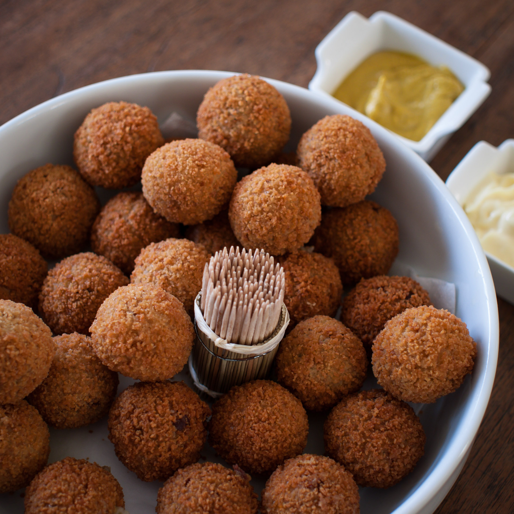

Home
Bitterballen

Description
Bitterballen (plural of bitterbal) are a Dutch meat-based snack, made by making a very thick stew thickened with roux and beef stock and loaded with meat, refrigerating the stew until it firms, and then rolling the thick mixture into balls which then get breaded and fried. Seasonings in the base stew usually include onions, salt and pepper, parsley and nutmeg.
Ingredients
- Meat: 1–2 lbs stewing beef or leftover roast, shredded.
- Aromatics: Onion, garlic, bay leaf, peppercorns, nutmeg, and parsley.
- Roux: Butter and flour (typically a 1:1 ratio by volume, e.g., ½ cup each).
- Liquid: Beef stock or reserved braising liquid (approx. 2–3 cups).
- Coating: Flour, beaten eggs, and breadcrumbs (panko or plain).
- Frying Oil: Vegetable or canola oil.
Steps
- Braise the Beef: Simmer cubed beef in stock with aromatics (onion, bay leaf, peppercorns) for 1.5–2 hours until fork-tender. Reserve the cooking liquid and shred the beef finely.
- Make the Ragout: Melt butter in a pan, whisk in flour to form a roux, and gradually whisk in the reserved stock until thick. Stir in the shredded beef, parsley, nutmeg, mustard, and seasonings. Simmer until very thick.
- Chill: Spread the mixture in a shallow container and refrigerate for at least 2–4 hours (or overnight) until solid enough to cut or scoop.
- Shape and Coat: Roll portions of the chilled mixture into balls. Dredge each ball in flour, dip in beaten egg, and coat thoroughly in breadcrumbs. Some recipes recommend a double-coat for extra crispiness.
- Fry: Heat oil to 350°F–375°F (175°C–190°C). Fry bitterballen in batches for 2–4 minutes until golden brown and heated through. Drain on paper towels and serve hot with mustard.